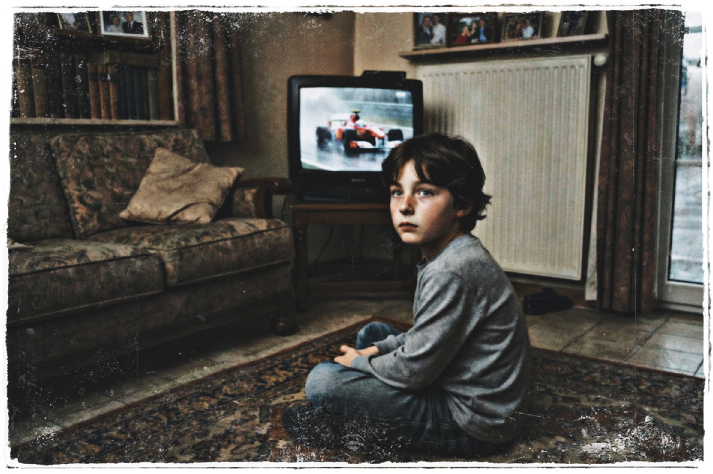
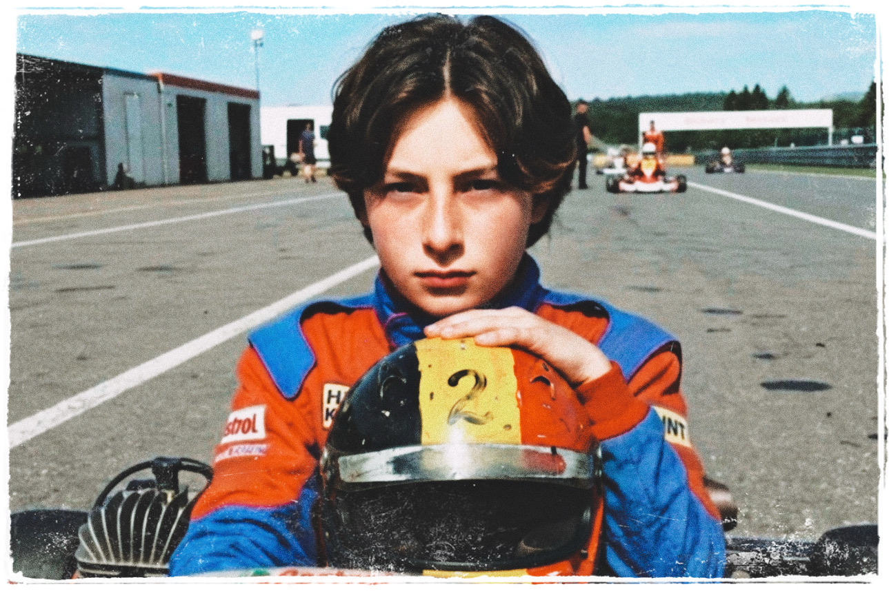
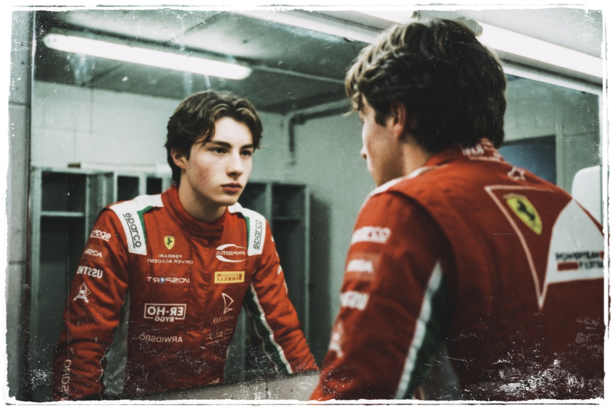
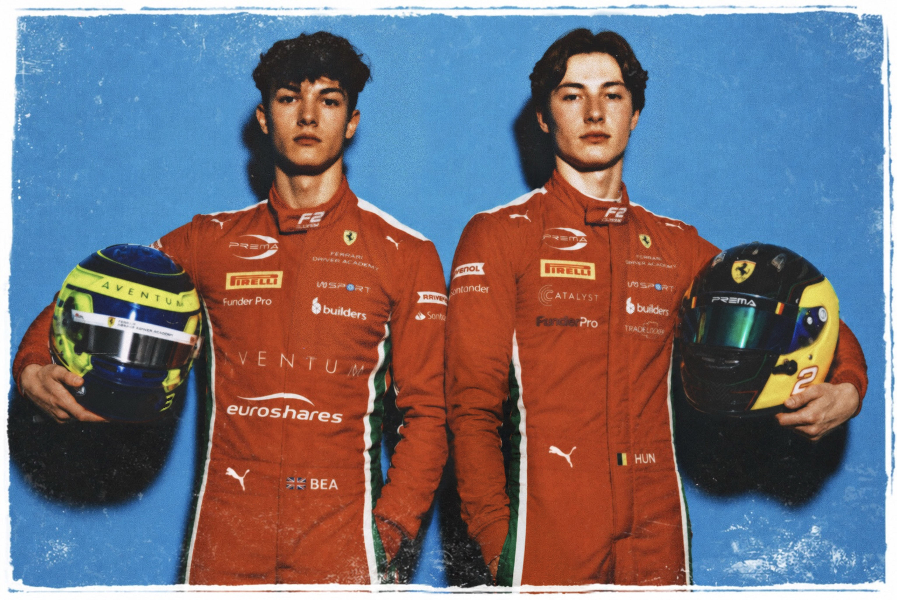

Chapter 2
The Scarlet Dream
The beginning of Hendryx’s scarlet dream
The scent of ink and the cold glass of the table faded,
but Hendryx didn't open his eyes.
He let himself sink into the smell of
rain-slicked asphalt and cheap motor oil.
Back to where all of it had begun...
Long before the world learned the name Hendryx Huntyr,
before the million-euro contracts and the private jets,
there was just a small, drafty living room
in a quiet corner of Belgium.
A house that didn't smell like prestige.
It smelled like Sunday roast, damp coats,
and the quiet, undefeated persistence of the working class.
Hendryx sat on the rug, chin in his hands,
legs crossed, back slightly hunched.
His eyes were glued to a flickering television screen,
too small to contain the world it was showing him.
The picture jumped at the edges.
The colour bled a little in the rain.
On the screen, a silver chrome McLaren
was dancing through the spray of a torrential downpour.
At the wheel was a young Lewis Hamilton,
already a World Champion, already defying physics,
carving his way into history with the ease of a natural force.
"You see that, Hendryx?" his father would say,
leaning over the back of the sofa,
a grease-stained rag in his hand.
"That's not just driving.
That's heart, I'll tell ya."
But Hendryx wasn't watching the silver McLaren.
He wasn't watching the surgical, methodical
Sebastian Vettel in his midnight Red Bull, either.
To him, Fernando Alonso's Ferrari
was the only beast that was truly alive.
A live wire of fury, screaming through the pixels.
A dart of scarlet rage, fighting a war
it was destined to lose.
Every desperate overtake.
Every defensive swerve.
Transmitted through the tinny speakers
and directly into the boy's bones.
His father watched his son, not the screen.
His voice was a low rumble, as familiar to Hendryx
as the thunder of an engine.
"Is that the one, son?"

Hendryx didn't answer...
he just gave a small, solemn nod.
The kind that meant everything
and cost nothing to say out loud.
He didn't have a custom-built simulator
or a private track in his backyard.
He had a beat-up kart that his dad spent
his weekends welding back together,
and a helmet with a hand-painted
Belgian flag, that was already starting to chip.
But the kart was his.
Not a loan.
Not a programme asset.
Not something that belonged to a crest or a colour.
Just steel and rubber and the smell of
two-stroke exhaust baked into everything he owned.
His father had bolted the seat brackets on a Sunday
with a torque wrench borrowed from the neighbour.
His mother had repainted the visor strip because
the original had faded pale
in a season of Belgian weather.
It wasn't fast, not by anyone else's measure.
But when Hendryx sat in it,
hands loose on the wheel, chin slightly lifted.
He wasn't a boy borrowing someone else's dream.
He was already home.

Calm.
Still.
Present.
Like a driver who has already found his line,
and is simply waiting for the lights to go out.
Still young enough that his feet barely
seemed made for the pedals.
But when he was in that kart,
the world finally made sense...
The Ferrari Driver Academy
The memories shifted.
Fast, blurred, like a high-speed corner.
When the other boys overdrove, slamming into corners
with yelps of oversteer, Hendryx was a ghost.
His lines were surgical.
Precise.
Repeatable.
The lap times weren't just fast.
They were identical, lap after lap, as if he had found a secret,
frictionless groove in the asphalt that no one else could see.
He was twelve, standing on a podium
in the pouring rain at Genk.
Shivering in a suit that was a size too big,
his trophy almost as large as his torso.
The rain plastered his hair flat against his forehead.
He didn't seem to notice.
A man in a dark polo shirt approached his father,
black sunglasses still on despite the overcast sky.
He didn't look like a racer.
He looked like an architect.
"The boy has a gift for the rain," the man said.
His eyes lingered on Hendryx for a moment,
hidden behind dark lenses,
before returning to the father.
"We have been watching..."
He handed over a plain white card
with the Prancing Horse embossed in the centre.
No fanfare, no ceremony.
Just a card, pressed between two fingers
into the palm of a working man.
"We see talent in unusual places," he said.
"We would like to see his geometry on a larger scale."
The contract that arrived weeks later was not a gift.
It was a loan document, secured against
a future he hadn't yet earned.
The Ferrari Driver Academy would pay for everything:
The karts, the engines, the coaches, the travel.
In return, they owned his first refusal on his soul.
If Hendryx was good enough, he would race for them.
If he wasn't, the debt would be written off,
and he would be simply forgotten,
like a defective, blown engine...
The kitchen table was scarred with years of heavy use,
the yellow light of the hanging lamp cast long,
flickering shadows against the wall.
The house breathed around them,
a creak, a settle, a draft through a gap no one had fixed.
The contract didn't look like a dream.
It looked like a ledger.
Hendryx Huntyr signed his name.
His hand was steady.
The pen felt lighter than
any steering wheel he had ever held.
That was the day the world changed.
The day the Golden Ticket arrived.
His mother watched from the shadows of the stove,
silent tears for the world her son was entering,
a world she couldn't follow him into,
couldn't explain, and couldn't protect him from.
His father placed a heavy hand on Hendryx's shoulder,
the grip of the man who understood
that his son no longer belonged to him.
He belonged to The Scarlet...
And suddenly, the quiet house was invaded.
Flights to Maranello.
Fitness tests that pushed him to the point of collapse.
The surreal sight of the gates of
the Fiorano Circuit swinging open just for him.

He remembered the first time he put on the red suit.
He had looked in the mirror and seen a stranger.
Someone destined for greatness,
Someone whose destiny was
stitched into the very fabric of the Scuderia.
He didn't understand it yet.
Not the weight of the colour.
Not the history stitched into every thread.
Not the expectation that came with wearing red.
At the time, it was just a suit.
Just a reflection in cold glass.
Just a boy pretending to be
something larger than himself.
But somewhere between that moment
and the first time the lights went out,
the illusion stopped being an illusion.
His rise through the ranks was not gradual.
One season simply handed him to the next.
Results pinned one after another.
The name at the top never changed.
1 | HUNTYR
1 | HUNTYR
1 | HUNTYR
The pattern became routine.
The routine became expectation.
Yet not every victory looked the same.
Some happened beneath grey Belgian skies,
with rainwater spraying off the narrow tyres.
Some arrived under the suffocating heat
of southern Europe, where tyre degradation
mattered more than bravery.
Engineers filled whiteboards with telemetry traces
and steering inputs, circling sectors in markers
like priests studying scripture.
The categories changed.
The habits did not...
Formula 4 did not reward impatience,
and Formula Regionals punished desperation.
Not every race could be won on instinct.
Sometimes victory meant waiting six laps longer
than everyone else could tolerate.
Other drivers attacked corners.
Hendryx solved the apexes.
Titles arrived not as miracles,
but as the natural conclusion of thousands of laps
repeated until imperfection had nowhere left to hide.
The boy who once chased a scarlet car
through a flickering television screen
was now leaving his own trail behind him.
Hendryx rises through Formula 3 and Formula 2
Formula 3 was the first real taste of blood.
The cars were louder, faster and hungrier.
The paddock didn't welcome him.
It tested him...
Cold mornings.
Empty grandstands.
Engines screaming without anyone listening.
The first races weren't legends,
they were lessons.
Tyres degrading faster than expected,
dirty air choking the front wing.
Veterans who knew how to survive... not just drive.
The speed was there immediately.
The results weren't.
Sprint races collapsed into chaos.
Safety Cars erased advantages.
Grip disappeared without warning.
Some weekends ended with trophies.
Others ended with telemetry sheets
covered in circles and unanswered questions.
While the world searched for prodigies,
Formula 3 searched for weaknesses.
And for the first time,
it found some.
Not enough to break him.
Enough to keep him there.
The final piece was still missing.
Not through lack of speed.
Not through lack of talent.
But because it demanded something
raw pace could not replace.
Completion.
The next season arrived.
Some moved on.
Some graduated first.
The paddock changed around him,
faces disappearing into Formula 2 garages.
Another winter.
Another launch event beneath fluorescent light.
Another season of carbon fiber and data traces.
The same circuits returned in different weather.
The same corners asked sharper questions.
And this time,
he answered them.
The rough edges began to disappear.
The unnecessary corrections grew smaller.
The hesitation disappeared.
The distance between instinct
and action narrowed with every lap.
He drove closer to the limit.
More precise.
More controlled.
More committed.
And somewhere in the repetition,
the limit stopped feeling like one.
He didn't just win.
He dismantled the field.
While rivals fought the steering wheel
like it was some wild animal,
Hendryx treated it like a precision instrument.
Through the deluge, he seemed to find traction
in places the circuit had forgotten to provide it.
The media dubbed him The Belgian Bullet.
The Tifosi began the long process of
learning how to pronounce his name.
He was The Chosen Son.
Ferrari was the religion...
and Hendryx Huntyr was beginning
to look like its next High Priest.

By the time he reached the paddock of Formula 2,
he was no longer a boy from a quiet corner of Belgium.
He had traded his hand-painted helmet
for a custom-molded carbon fiber shell,
and the quiet life he once knew
for the scarlet dream.
The noise was different now.
Not cheers... but expectations.
Engineers didn't ask if he was fast.
They asked how much faster he could be.
Every lap was measured.
Every mistake remembered.
Every silence noted.
Media days blurred into simulator sessions.
Airports became more familiar than home.
Hotel ceilings changed faster than seasons.
He learned how to answer questions
without saying anything at all.
How to stand beneath the flashbulbs
with the calm expression Ferrari preferred.
How to bury frustration beneath telemetry.
How to turn pressure into procedure.
He was the future that would eventually replace the legends.
He was exactly where they wanted him.
Not a driver.
Not a prodigy.
A project.
A masterpiece of their own making.
Until the masters decided that
they no longer needed the masterpiece.